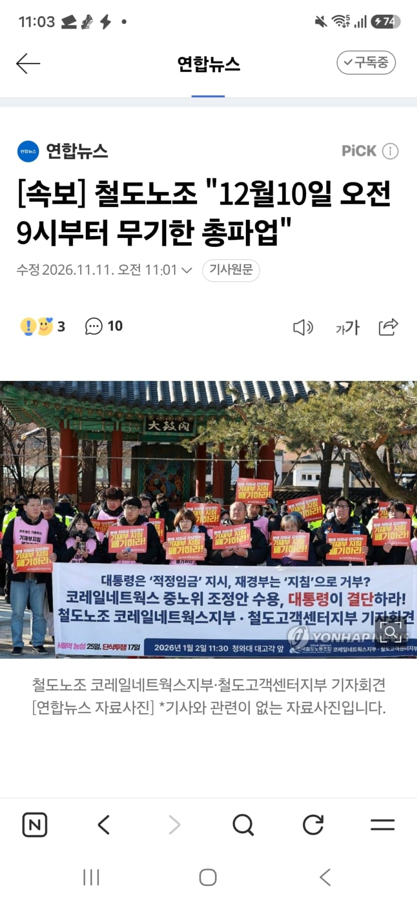
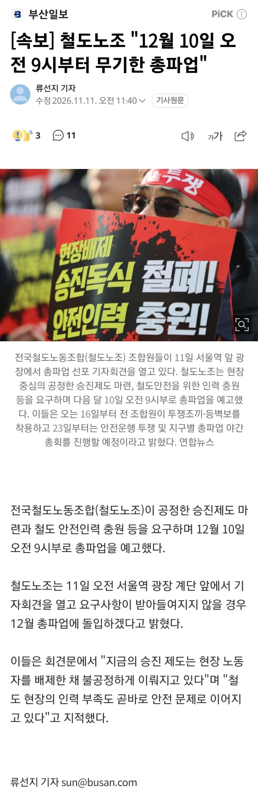
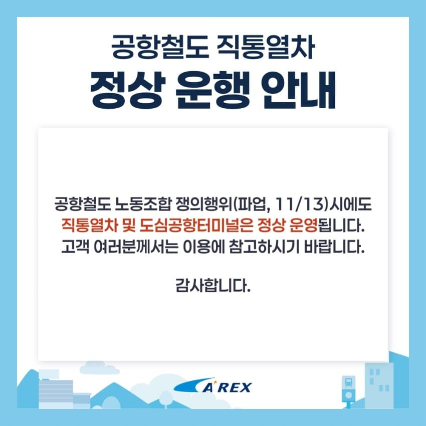

- [속보] 철도노조 "12월 10일 오전 9시부터 무기한 총파업"


![viewimage.php?id=21bcde21e3c736ab6bbbdfb4&no=24b0d769e1d32ca73de783fa11d028313cacdb81783b1805646092b1b5727ea3331e475bf7d9b09258766c480135a728e1bdf49e85af1da296c28e2146ed72abb01e81bc4034889eaeeeb61f4443ffc7e39f6a9fc4f88db59cb5f01eca80bd2053fe148801d127bd29345d05155743dae769a247a62008a12ec48a766b82c58d8d8c487b512fcbada5eb5d60195f4ada4a4160d4f4a0c8e44dc5765da61965a725ca2c901668e12b0cf7f665fe992939e60aa2c80acc63f38be6b069f3cf9679290b15ec2a9e9e2dd58542a6b9478fe24f7a2ef193655c7c97acc7b1ceef0e4133cf57786c5e577eb8b63a9a3ce86af440fc87eafbe547837c75a62abcfe43](../assets/477815/1e40d071c2711724058e5341.png)
- 파업 당일(11.13.) 공항철도 직통열차 정상 운행 안내

일부 외부·대용량·응답 실패 미디어는 원본 링크로 남아 있습니다.

- [속보] 철도노조 "12월 10일 오전 9시부터 무기한 총파업"

- 파업 당일(11.13.) 공항철도 직통열차 정상 운행 안내

댓글
수집 당시 댓글 21개
ㅇㅇ · 11.11 11:06:06
슈니발렌 · 11.11 11:06:17
땨뗘(봇) · 11.11 19:00:06
메윈터 · 11.11 19:00:06
ㅇㅇ · 11.11 19:01:45
かなたん · 11.11 19:02:04
ㅇㅇ · 11.11 19:02:13
· ㅇㅇ · 11.11 19:02:56
DC전사쿠루미쨩 · 11.11 19:03:18
ㅇㅇ · 11.11 19:03:37
황족 · 11.11 19:03:55
dorosi · 11.11 19:04:13
실베현자 · 11.11 19:04:36
ㅇㅇ · 11.11 19:04:53
ㅇㅇ · 11.11 19:06:17
ㅇㅇ · 11.11 19:06:23
· ㅇㅇ · 11.11 19:09:59
ㅇㅇ · 11.11 19:09:32
ㅇㅇ · 11.11 19:11:19
ㅇㅇ · 11.11 19:12:24
나라
· ㅇㅇ · 11.11 19:12:32
꼬
라지